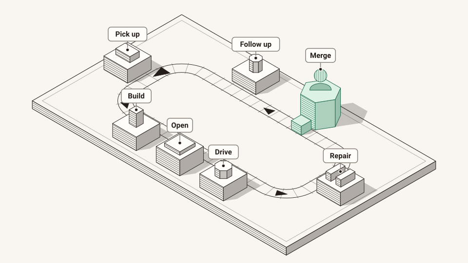

The line
Every change passes the same stations: pick up, build, open, drive, repair, merge, follow up. The follow-up sends what the merge owes back to the first.
A person merges at the sixth.
You merge.